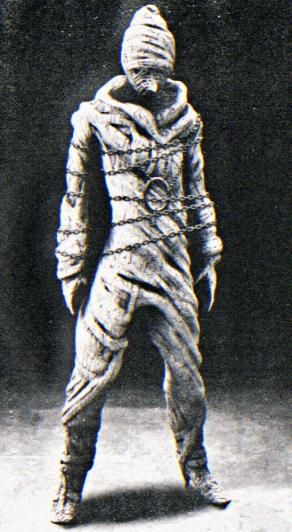

SCP-701-1 in a still image from SCP-701-19██-A
Item #: SCP-701
Object Class: Euclid
Special Containment Procedures: All materials relating to SCP-701 are to be kept in a triple-locked archive at Storage Site-██. These items currently consist of: the two (2) currently extant copies of the 1640 quarto; twenty-seven (27) copies of the 1965 trade paperback edition; ten (10) copies of a 1971 hardcover printing; twenty-one (21) floppy diskettes, consisting of data seized from raids on [EXPUNGED]; one (1) S-VHS video cassette tape (designated SCP-701-19██-A); and one (1) steel knife of unknown origin (designated SCP-701-19██-B). At no time are any of these items to be removed from the room. Access to the area is to be heavily monitored; absolutely no personnel whatsoever is to be granted access to the archive without the express, in-person permission of Drs. L████, R█████ and J██████.
Description: SCP-701, The Hanged King's Tragedy, is a Caroline-era revenge tragedy in five acts. Performances of the play are associated with sudden psychotic and suicidal behavior among both observers and participants, as well as the manifestation of a mysterious figure, classified as SCP-701-1. Historical estimates place the number of lives claimed by the play at between █████ and █████ over the past three hundred years.
Performances of The Hanged King's Tragedy do not always end with an outbreak. Of the ██ recorded performances, only ██ (36.78%) have ended in SCP-701 events. According to historical records and investigations, these outbreaks generally follow the same pattern:
- 1 to 2 weeks (7 to 14 days) prior to Event: During the dress rehearsal period, cast members will begin to spontaneously deviate from the published text of the play. Rather than improvisation or gaffs associated with going 'off script,' said deviations will be both orderly and consistent, as if the actors were working off a new version of the script. The cast and production crew will seem unaware of any change, and - if it is brought to their attention - will state that the play has run that way from the beginning.
- 2 to 3 hours prior to Event: The outbreak generally occurs during Opening Night, or else at the production with the greatest planned attendance (generally falling within the first week after the play's opening).
- 1 to 2 hours before Event: SCP-701-1 begins to appear on stage in the final scene of Act I, generally in the background or to the side of the main action. It may seem to enter or exit the stage area, but does not appear to ever enter the backstage or off-stage area; it simply disappears when not on stage. The cast does not appear to notice or comment on SCP-701-1, at least at first.
- The Event: SCP-701-1 appears fully on stage during the banquet scene in Act V. Here, it will be incorporated into the action of the play as 'the Hanged King.' The cast will either murder each other or commit suicide, sometimes using items that seem to appear spontaneously on stage. Rioting breaks out in the audience, with viewers randomly attacking anyone in front of them, regardless of prior relationship.
- Following the Event: If any of the audience members survive the initial outbreak, they may exit the performance space, in which case they will continue to engage in random or opportunistic violence. Victims will generally require sedation or restraint in this scenario; normal personality will begin to return roughly 24 hours after the event. Surviving victims will generally exhibit signs consistent with a traumatic experience; some will have no recollection of the event. Others may be rendered permanently comatose or psychotic.
For a typical case study of an outbreak, see Incident Report SCP-701-19██-1, an analysis of the events leading up to the last uncontained SCP-701 event in 19██, during a high school drama performance in █████████████, ████. For more information on the play’s published text, see Document SCP-701-1640-B-1.
In short, SCP-701 is a self-evolving memetic virus, transmitted through unknown means through the text of the play. Dr. L████ has theorized that SCP-701 events may involve [EXPUNGED]. This hypothesis is consistent with a spike in ████ ██████ levels detected via satellite in the vicinity of the 19██ incident, indicating [EXPUNGED].
Foundation agents are under standing orders to suppress any performance or publication of SCP-701 whenever found or detected. Despite our best efforts to the contrary, however, the play remains freely available online, sometimes under different titles. All attempts to detect or isolate the origin of these copies have failed. Suppression of the play's publication has generally been successful, with most copies of a 1971 scholarly edition destroyed before distribution. Nonetheless, copies of the 1965 trade paperback turn up with some regularity in both college and high school libraries. Agents are to obtain or otherwise destroy these items whenever possible.
History: The first known publication of The Hanged King’s Tragedy was as a quarto dated 1640. The play’s author is not listed. The publisher, one William Cooke, disappeared from the historical record soon thereafter. Strangely, the text does not appear in the Stationers’ Register.
The first known SCP-701 event on record occurred in 18██ during a performance of the play in ██████, ██, USA. Other significant incidents include the 19██ performance at a small theater in ██████, ███, ██; the 1964 performance at the University of ███████████, ███████████, ███████; the 19██ performance at ██████ University, the first SCP-701 event successfully suppressed by the Foundation; the 19██ performance by a student group in ███████, CA; the 19██ television adaptation by the ██████████ Broadcasting Corporation (production successfully shut down by the Foundation before broadcast); and the 19██ incident in ██████████████, OH, USA, designated SCP-701-19██-1.
Publication History:
- Original 1640 quarto (all known copies in Foundation custody)
- 1733 folio edition (republished 1790)
- 1813 Cambridge University Press edition
- 1965 trade paperback edition
- 1971 hardcover edition
Agents should note that copies of the play have often been misfiled under different titles or spellings of the title. Furthermore, photocopies of the 1965 text have been found in circulation throughout college theater departments in the continental United States and in the United Kingdom.
Additional:
- Given the high probability of [EXPUNGED] in my mind, I again recommend that SCP-701 be upgraded to Keter-class. The SCP-701 memetic virus may very well be the forefront of an invasion scenario. Furthermore, [EXPUNGED]. - Dr. L████, 1237116060.
- Denied. None of the current information we have on SCP-701 indicates a XK-class scenario. Until we have additional data, classification will remain at Euclid. — Face facts, Doctor. The cat's been long out of the bag on this one. And in this line of business, we consider ourselves lucky if we only lose a hundred or so people every ten years. - O5-█, 1237197060.